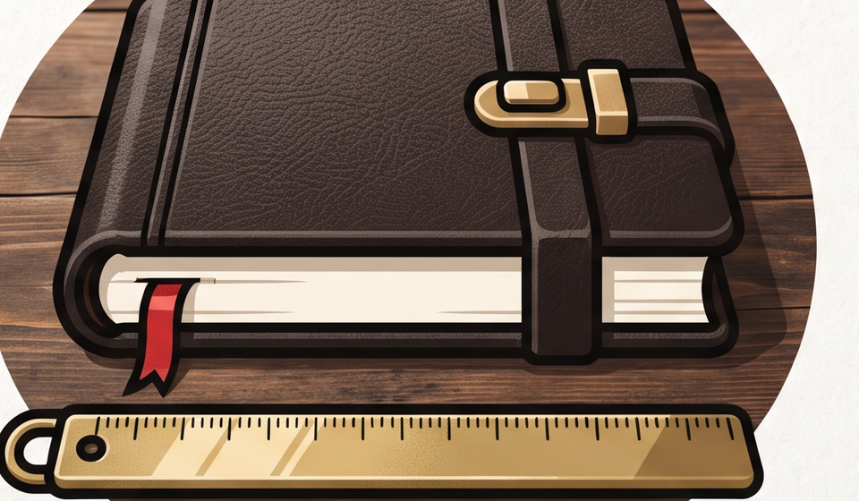
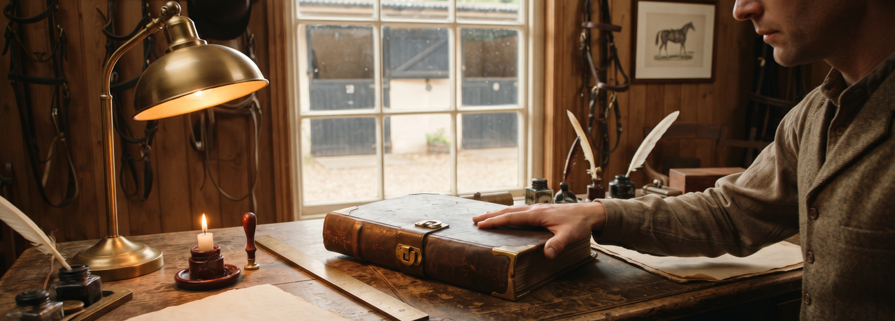
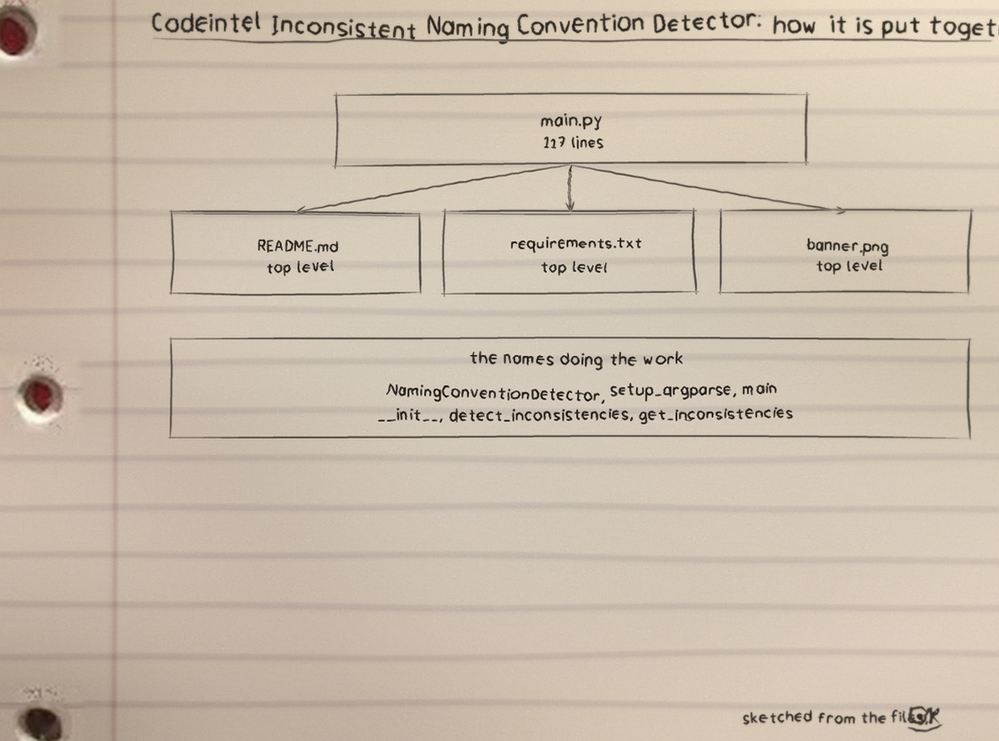
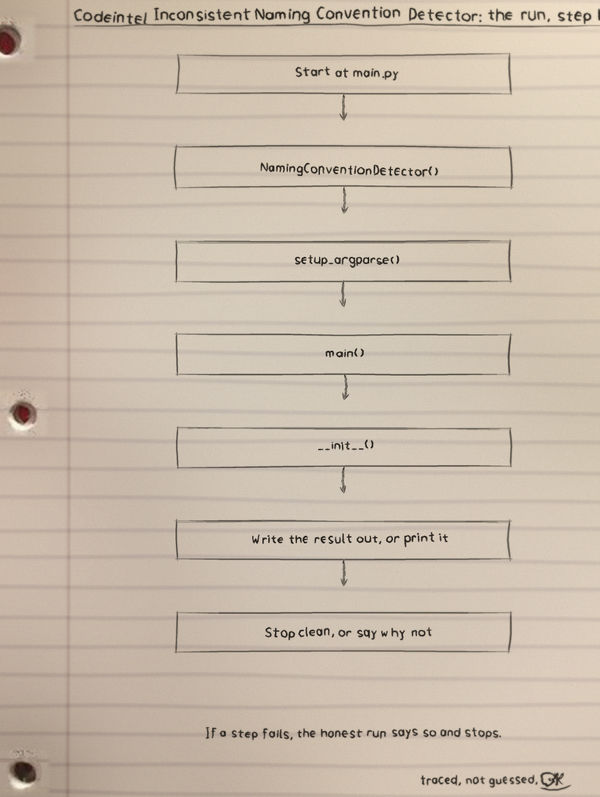
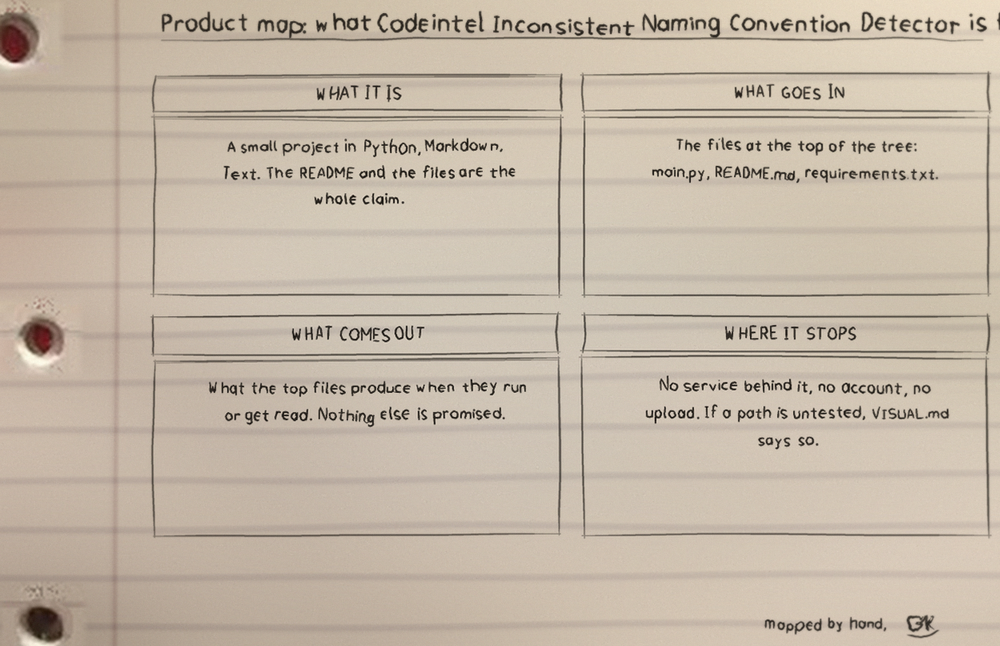

One Python file, read line by line, and every entered name checked against the one pattern the book allows.

codeintel-inconsistent-naming-convention-detector is a Python tool from ShadowGuard-AI, standard library only. It reads one Python file line by line with regular expressions and reports the names that break two patterns.
Run it as python3 main.py FILENAME. The flags --variable-pattern and --function-pattern each default to the snake_case pattern ^[a-z][a-z0-9_]*$.
Only two kinds of name are ever tested: assignment targets at a line start (an anchored search that deliberately refuses the left side of a comparison) and function names after def. Class names, arguments, and attributes are never tested against either pattern, so a CamelCase class passes in silence.
Because the scan is line by line text, a name inside a string or a comment that looks like an assignment is read as one. The code accepts that noise in exchange for not parsing.
Findings never move the exit code: a file full of bad names and a clean file both exit 0, and the printed list is the whole result. A missing file or a directory exits 1.
The README clone line names the stale ShadowStrikeHQ organisation, its usage line is a placeholder naming an executable the repo does not ship, its parameter list omits the required positional filename, and its closing licence line reads Copyright (c) ShadowStrikeHQ while the LICENSE file is MIT. All four stand as printed in the README and are flagged there.


